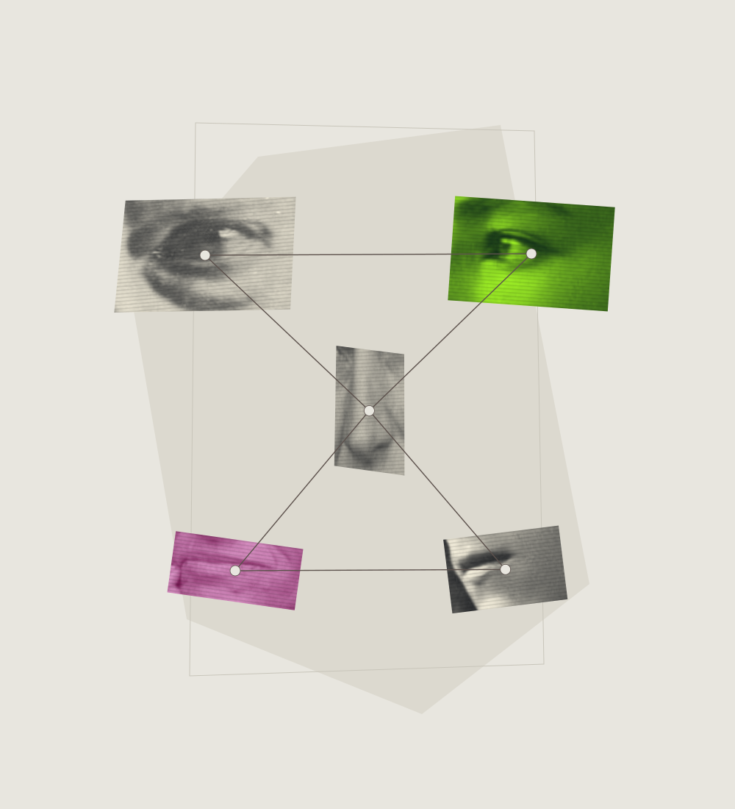
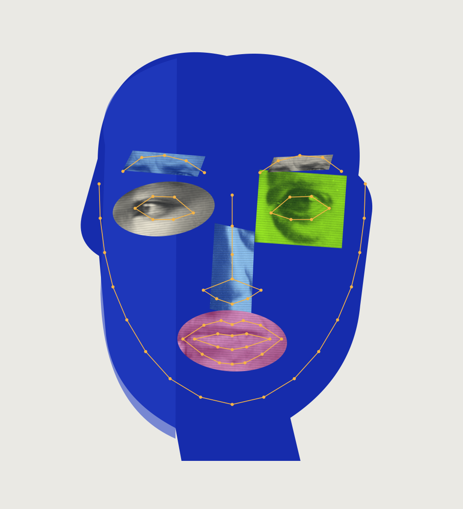
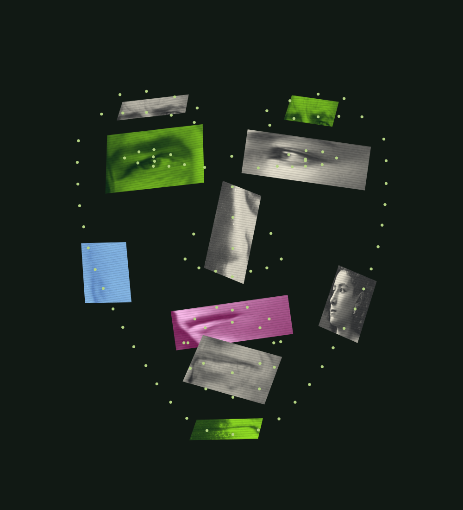
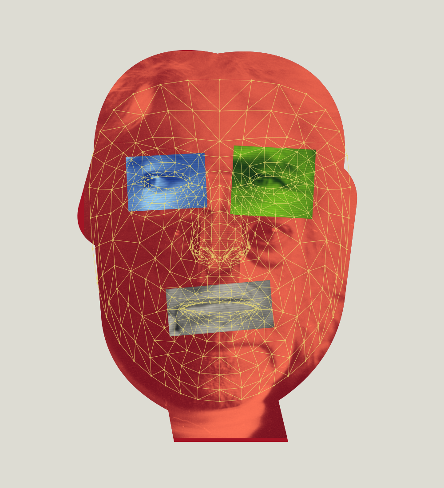
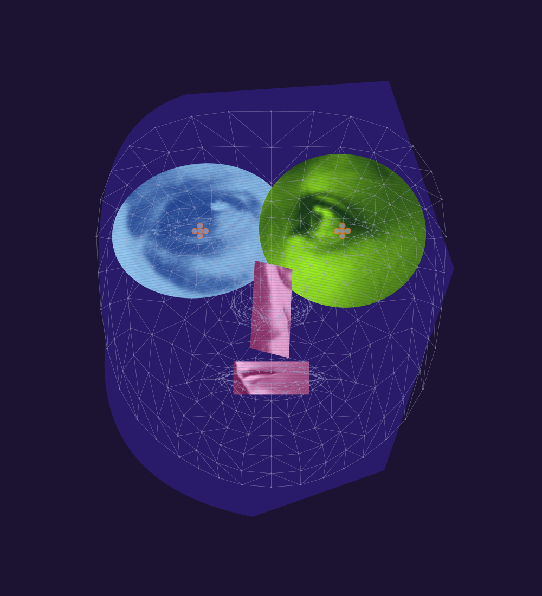
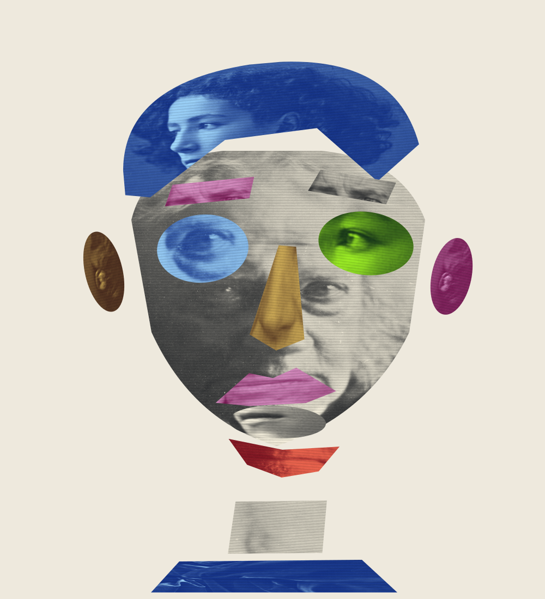

01 / A face in five places
5 anchorsFive photographic islands. A few coordinates try to hold several people together.
Export SVG ↗Six collage compositions / 2026
Borrowed eyes, mouths and skin meet the structures used to describe a face. Six layouts after Tony Oursler’s practice and computational facial models.
Open a face. Drag its fragments. Arrow keys move a focused fragment; Escape restores it.

Five photographic islands. A few coordinates try to hold several people together.
Export SVG ↗
A flat mask holds borrowed features. The contours stretch when the eyes move.
Export SVG ↗
A point cloud suggests a face; scattered images keep breaking its continuity.
Export SVG ↗
An archival portrait becomes a measured surface. Other faces interrupt its apparent certainty.
Export SVG ↗
The eyes grow beyond their assigned area. Being mapped begins to feel like looking back.
Export SVG ↗
Image regions become loose pieces. Their borders decide where one part of a person ends.
Export SVG ↗